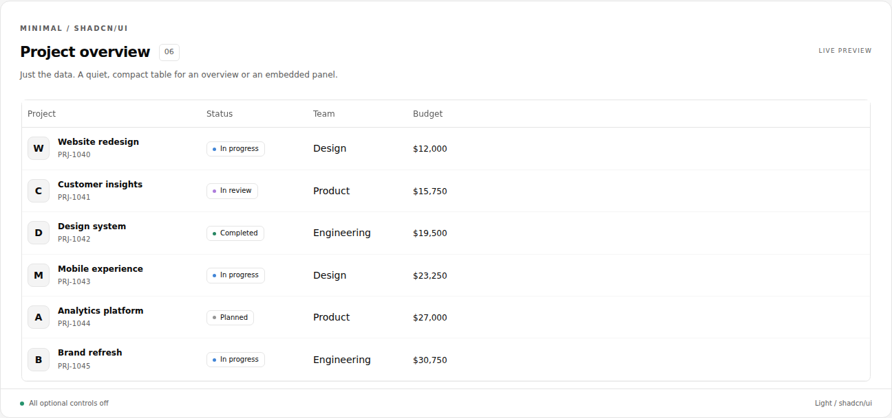

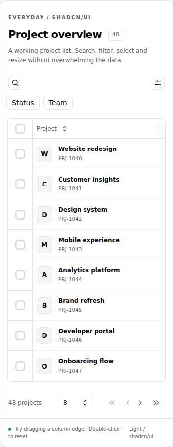
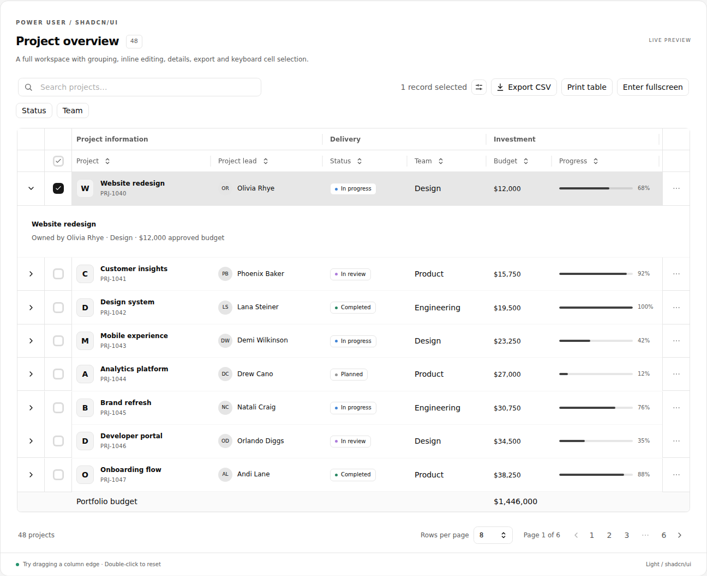
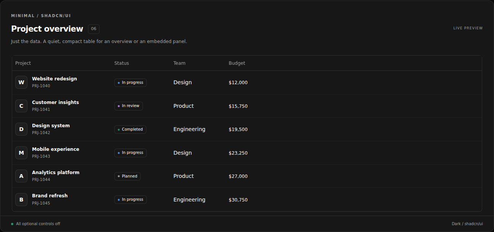

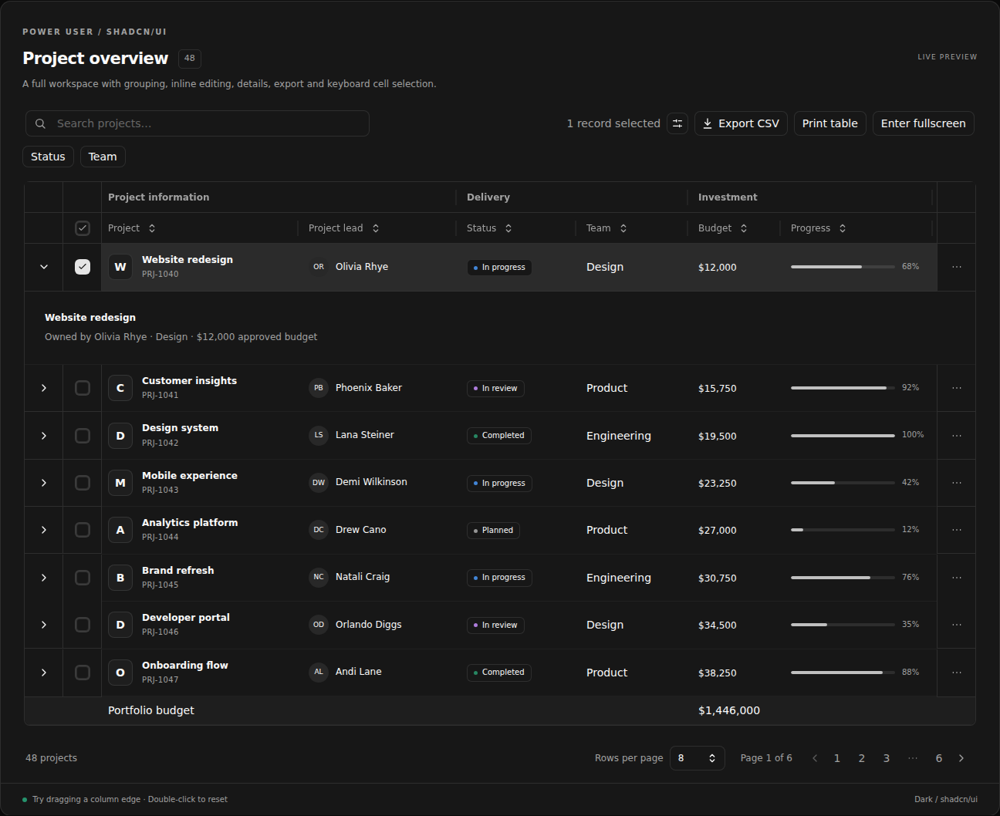
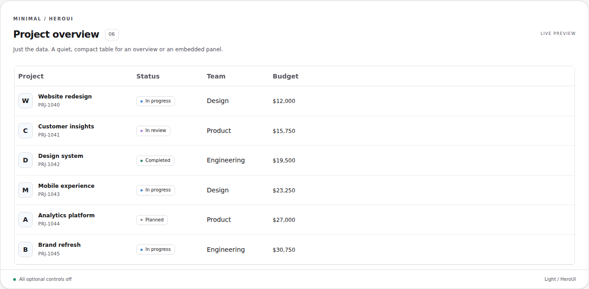

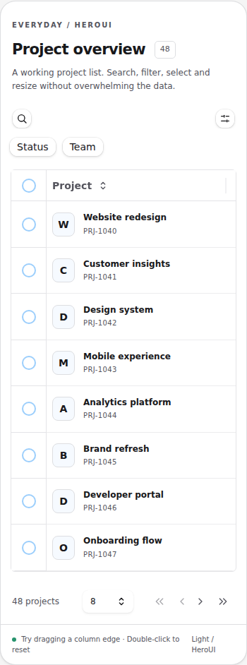
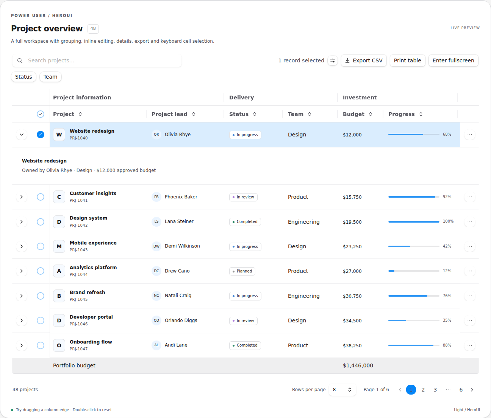
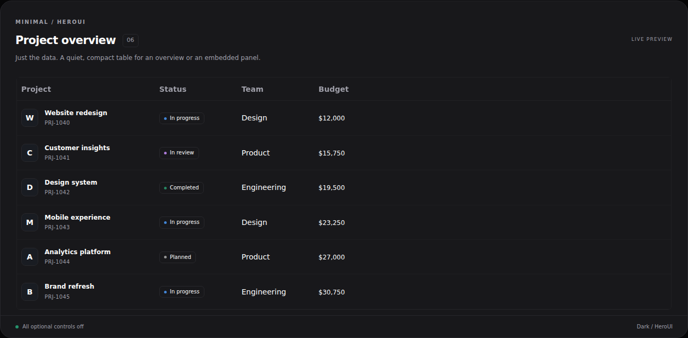

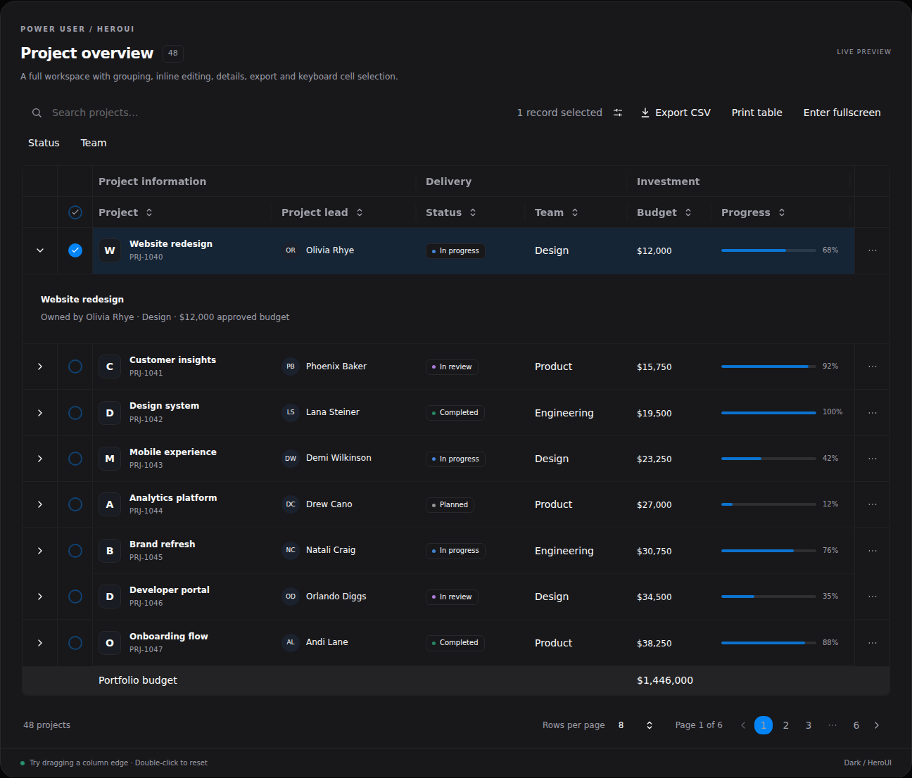
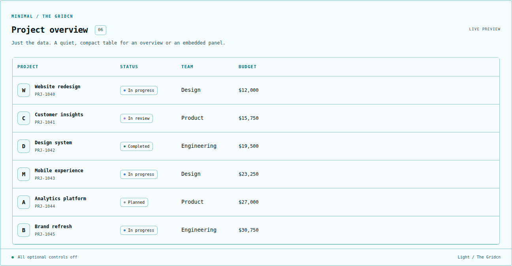

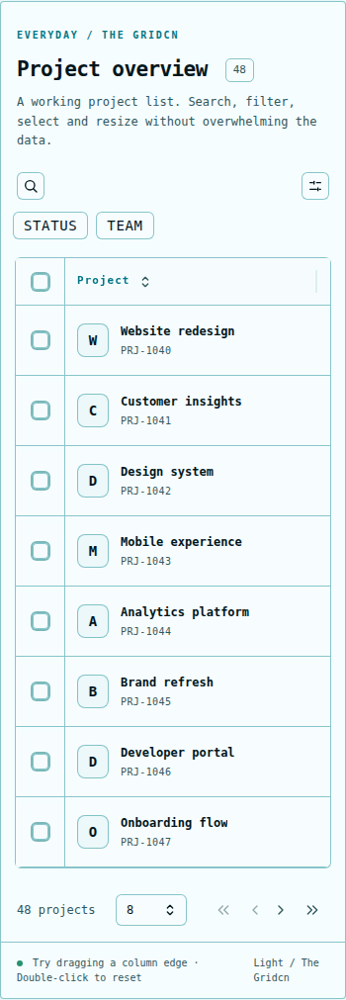
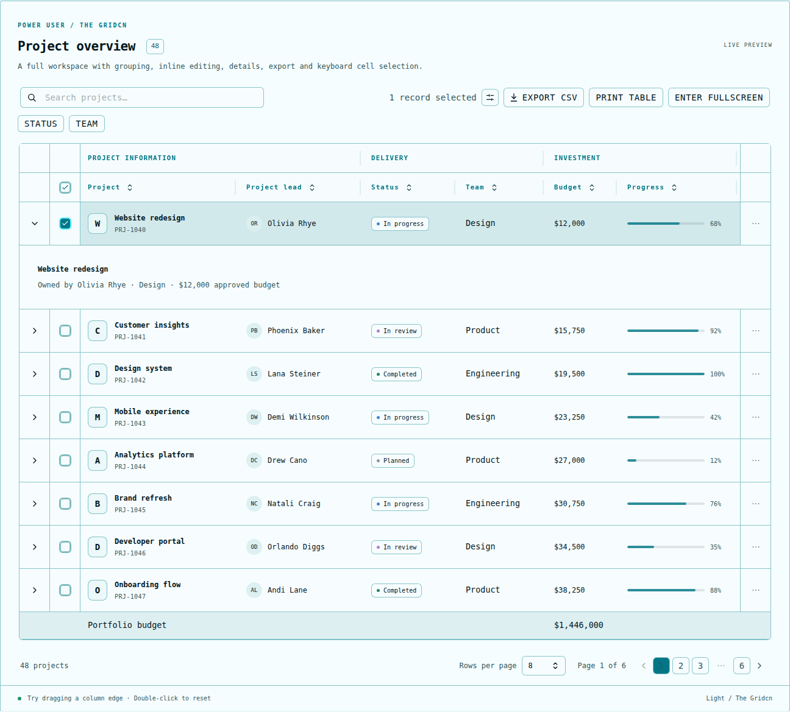
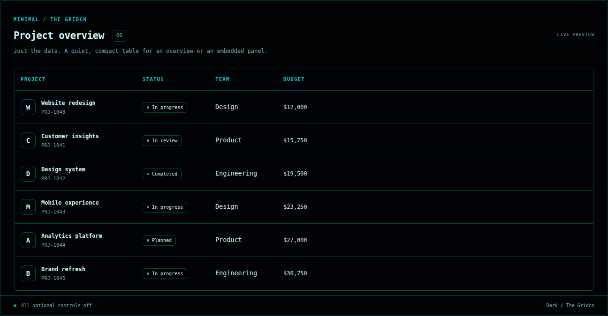

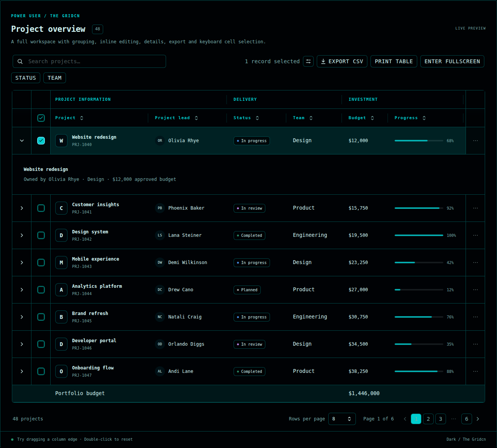
Actual browser renders of the shared table. Click a preview for the full-resolution PNG.
Minimal: controls off. Everyday: search, filters, selection, resizing, pagination. Advanced: grouped headers, selected row, expanded details, editing, summary, export and grid controls.
Captured at 1440px desktop and 390px mobile. Light and dark themes.














